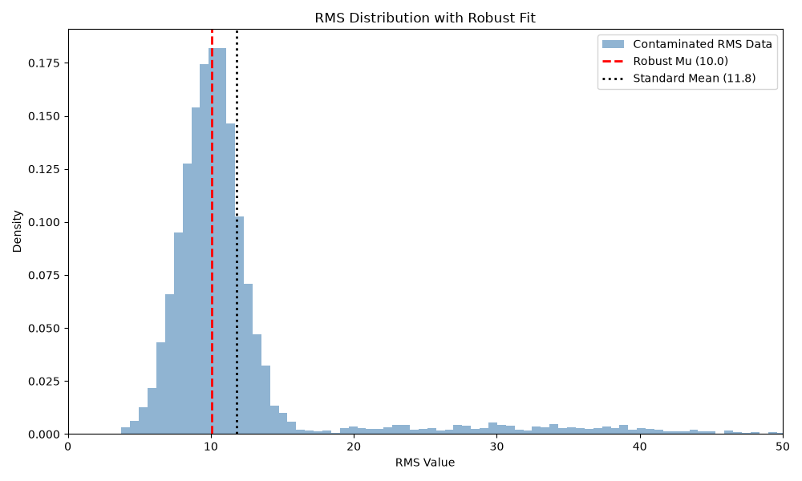

Note
Go to the end to download the full example code.
Quantifying Dataset Noise with RMS Statistics#
This example demonstrates how to use ASR’s robust mathematical estimators independently of the full ASR pipeline to quantify the baseline noisiness of a dataset.
We use the fit_rms_distribution function. This function takes a distribution
of window-RMS values, ignores the extreme artifact tails, and fits a Generalized
Gaussian curve to the clean data. This allows researchers to calculate robust
location (mu) and scale (sigma) statistics to standardize or compare subjects.
Imports#
import matplotlib.pyplot as plt
import numpy as np
from mne_denoise.asr import fit_rms_distribution
Part 1: Synthetic Data#
Let’s generate a synthetic distribution of RMS values. Real EEG/MEG RMS values often follow a Generalized Gaussian distribution, but are heavily contaminated by large, positive “tails” caused by artifacts like eye blinks or movement.
rng = np.random.default_rng(42)
# Simulate clean brain RMS data (mean=10.0, std=2.0)
clean_rms = np.abs(rng.normal(loc=10.0, scale=2.0, size=5000))
# Simulate massive artifact RMS data (mean=30.0, std=10.0)
artifact_rms = np.abs(rng.normal(loc=30.0, scale=10.0, size=500))
# Combine them into a single contaminated dataset
contaminated_rms = np.concatenate([clean_rms, artifact_rms])
np.random.shuffle(contaminated_rms)
print(f"Total simulated windows: {len(contaminated_rms)}")
Total simulated windows: 5500
Fitting the Distribution#
If we used standard mean and standard deviation on this dataset, the massive
artifacts would severely distort the results.
Instead, we use fit_rms_distribution to ignore the artifact tails and
fit the true clean core.
standard_mean = np.mean(contaminated_rms)
standard_std = np.std(contaminated_rms)
# We set return_info=True to get the exact fitted shape parameter (beta)
mu, sigma, info = fit_rms_distribution(contaminated_rms, return_info=True)
print("\n--- Standard Statistics ---")
print(f"Mean: {standard_mean:.2f}")
print(f"Std: {standard_std:.2f}")
print("\n--- Robust RMS Statistics ---")
print(f"Mu (Clean Center): {mu:.2f}")
print(f"Sigma (Clean Spread): {sigma:.2f}")
print(f"Beta (Curve Shape): {info['beta']:.2f}")
# Notice how `mu` perfectly locked onto the true clean mean (10.0), while
# the standard mean was artificially dragged up by the artifacts.
--- Standard Statistics ---
Mean: 11.81
Std: 6.84
--- Robust RMS Statistics ---
Mu (Clean Center): 10.04
Sigma (Clean Spread): 2.01
Beta (Curve Shape): 2.00
Visualizing the Fit#
We can visualize the distribution to see exactly what the algorithm did. The algorithm found the main peak and ignored the long right tail.
fig, ax = plt.subplots(figsize=(10, 6))
# Plot the raw histogram
counts, bins, _ = ax.hist(
contaminated_rms,
bins=100,
density=True,
alpha=0.6,
color="steelblue",
label="Contaminated RMS Data",
)
# Plot the robust center
ax.axvline(mu, color="red", linestyle="--", linewidth=2, label=f"Robust Mu ({mu:.1f})")
ax.axvline(
standard_mean,
color="black",
linestyle=":",
linewidth=2,
label=f"Standard Mean ({standard_mean:.1f})",
)
ax.set_title("RMS Distribution with Robust Fit")
ax.set_xlabel("RMS Value")
ax.set_ylabel("Density")
ax.set_xlim(0, 50)
ax.legend()
plt.tight_layout()
plt.show(block=False)

Part 2: Real Data#
In practice, you would calculate these RMS values yourself directly from your continuous data by sliding a window across it and calculating the RMS of the variance for each window.
This allows you to quantify “how noisy is this subject compared to the cohort?” or to Z-score your data robustly prior to downstream machine learning.
Total running time of the script: (0 minutes 0.196 seconds)